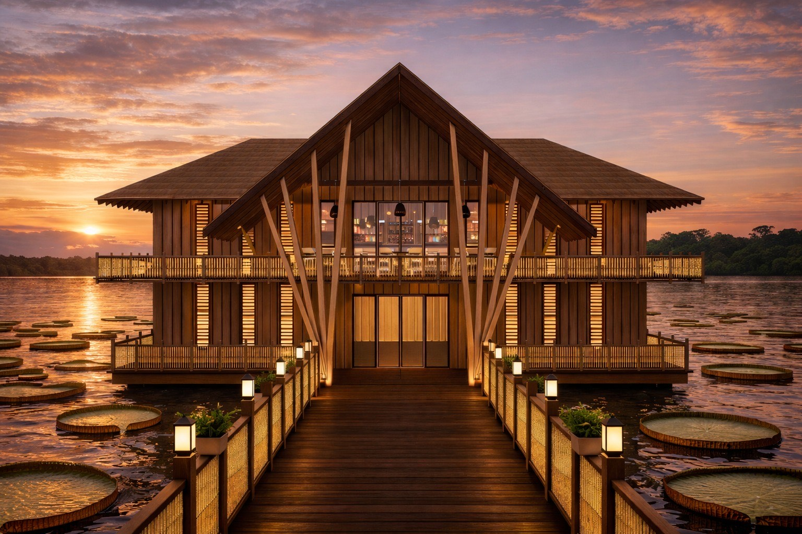
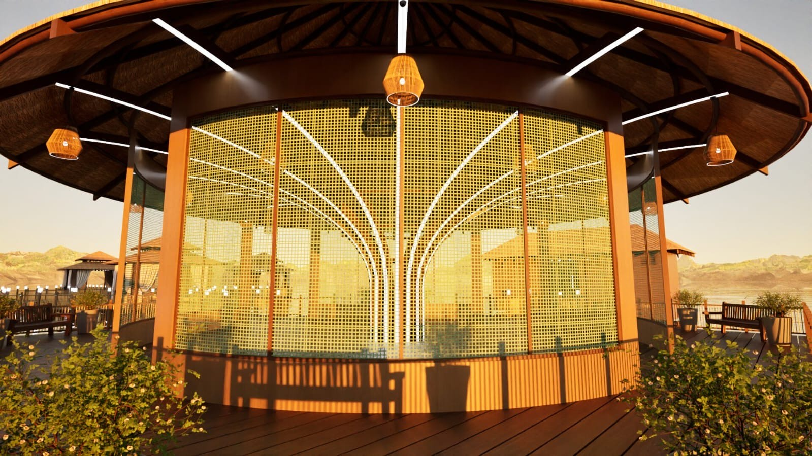
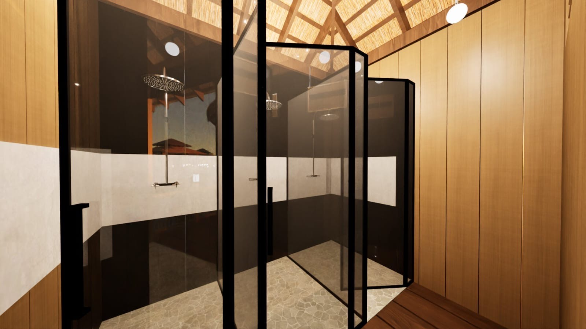
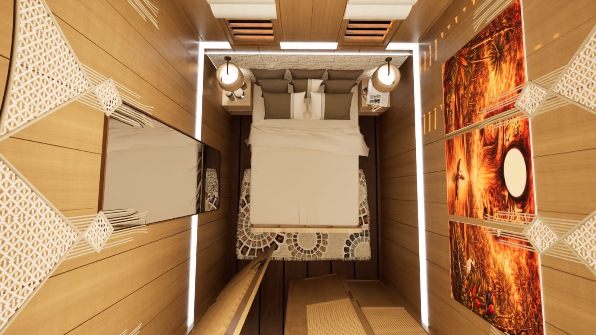
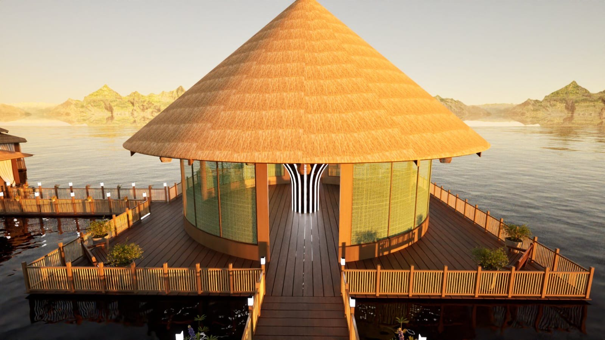
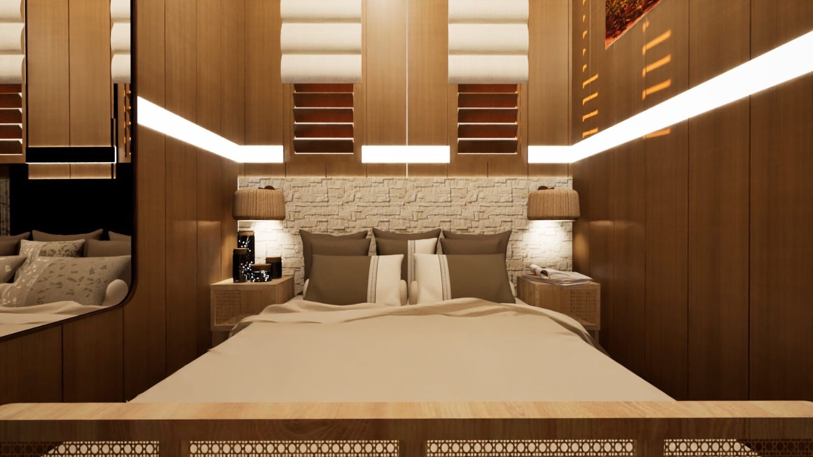

Investment Opportunity
Reflections River Retreat represents a rare opportunity to invest in the rapidly growing wellness and spiritual tourism market. Located in Iquitos, Peru—the gateway to the Amazon—this retreat combines luxury accommodations with transformative healing experiences.
Growing Market
The Shamanic Ayahuasca tourism industry is experiencing unprecedented growth, with retreat centers becoming highly sought-after destinations for those seeking transformation and healing.
Prime Location
Iquitos, Peru offers unparalleled access to the Amazon rainforest, making it an ideal location for an authentic ayahuasca retreat experience.
Unique Concept
Our retreat combines traditional healing practices with Amazonian heritage, and includes a restaurant, bar, and other amenities, creating a distinctive offering in a competitive market.
The Vision
Reflections River Retreat is currently under construction, designed to provide guests with a serene, transformative experience. The retreat will feature luxurious accommodations, traditional healing ceremonies, and a deep connection to the natural beauty of the Amazon.
Our vision is to create a space where guests can reflect, heal, and transform in an environment that honors both modern comfort and ancient wisdom. The retreat's design emphasizes harmony with nature, featuring stunning river views and integration with the surrounding landscape.
Architectural Concepts






Location: Iquitos, Peru
Iquitos is the largest city in the Peruvian Amazon and the world's largest city that cannot be reached by road. This unique location offers investors and guests alike an authentic Amazonian experience, accessible only by air or river.
The city serves as the primary gateway to the Amazon rainforest, making it an ideal location for a retreat center focused on traditional healing practices and connection with nature.
Interested in Learning More?
We're seeking strategic investors who share our vision of creating a transformative space in the heart of the Amazon. Contact us to learn more about this unique investment opportunity.